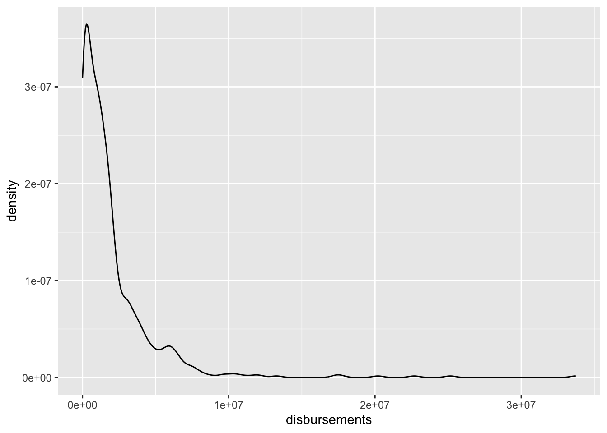
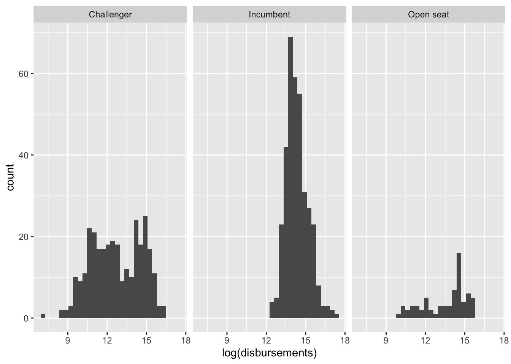

Section 5. Intro to ggplot
Introduction to ggplot
A lot of the time we want to get some sort of visual overview of our data. This can help with modeling decisions. It can help with understanding relationships in the data. In R, we often rely on the package ggplot. This is a package that is contained within tidyverse and has a lot of functionality for making different plots.
All ggplot visualizations start with data, a ggplot() command, and an aes() command. We build on this ggplot() base using the + operator.
For example, to make a plot using our House elections data, we would use the following code:
house %>%
ggplot()To put something in this plot, we need to use the mapping argument in the ggplot() command. This mapping argument accepts an aes() command. aes() takes information from our dataset and puts it into a format usable by ggplot(). Examples of common aes() arguments are x, y, color, fill, pch, etc.
The x argument tells ggplot() which variable should be on the x-axis. The y argument creates the y-axis.
As an example,
house %>%
ggplot(aes(disbursements, voteshare))This code creates a ggplot() foundation with campaign spending on the x-axis and voteshare on the y-axis.
Univariate Summaries
Numeric
Histograms: geom_histogram()
To get an idea of the distribution of a numeric variable, we can use what is known as a histogram. A histogram splits our numeric variable into chunks and counts the number of observations in each chunk.
If we want to make a histogram of our campaign spending data, we could do so with this code:
house %>%
ggplot(aes(disbursements)) +
geom_histogram()`stat_bin()` using `bins = 30`. Pick better value with `binwidth`.
Density Plots
Closely related to the histogram, we also have density plots. These provide a smooth overview of the distribution of our data. To make a density plot, we can use the geom_density() command.
house %>%
ggplot(aes(disbursements)) +
geom_density()
Categorical
Often, we are working with categorical data, so the approaches above won’t work. We have to use different plots to summarize categorical data.
Barplots: geom_bar()
Barplots are perhaps the most common visual summary of a single categorical variable. This looks similar to a histogram, but it counts the number of observations in each category of our factor variable. It’s conveying the same information as table() but in a visual format.
table(house$incumbent_challenge_full)
Challenger Incumbent Open seat
302 355 69 house %>%
ggplot(aes(incumbent_challenge_full)) +
geom_bar()Bivariate Summaries
Numeric-Numeric
Scatterplots: geom_point()
Many times what we are interested in is the relationship between two variables. In the case of our House elections dataset, we might be interested in how campaign spending is related to voteshare. We generally plot these types of relationships using what is known as a scatterplot.
The ggplot command to create a scatterplot is geom_point().
Let’s make a plot of voteshare against campaign spending.
house %>%
ggplot(aes(disbursements, voteshare)) +
geom_point()
This doesn’t look super helpful. That’s because a lot of our data are compressed with very little spending, and there are a few observations with a high amount of spending. It often helps visually to log transform skewed numeric variables prior to plotting them. This essentially compresses the distribution, pulling extreme values in toward the center.
house%>%
ggplot(aes(disbursements)) +
geom_histogram() `stat_bin()` using `bins = 30`. Pick better value with `binwidth`.house%>%
ggplot(aes(log(disbursements))) +
geom_histogram()`stat_bin()` using `bins = 30`. Pick better value with `binwidth`.When we log transform campaign spending,
house %>%
ggplot(aes(log(disbursements), voteshare)) +
geom_point()Numeric-Categorical
We might be curious about how the distributions of our numeric variables vary across different categories of our factor variables.
Box-and-Whisker Plots: geom_boxplot()
We can use box-and-whisker plots to get a feel for how distributions vary across categorical variables. For example, how does campaign spending vary by incumbency status?
house %>%
ggplot(aes(incumbent_challenge_full, log(disbursements))) +
geom_boxplot()Facet Wraps: facet_wrap()
We can also generate separate histograms or density plots for each category in our data using something called a facet wrap. We can convey similar information as above using the facet_wrap() command. The main argument of the facet_wrap() command is a ~ followed by the name of the categorical variable.
house %>%
ggplot(aes(log(disbursements))) +
geom_histogram() +
facet_wrap(~incumbent_challenge_full)`stat_bin()` using `bins = 30`. Pick better value with `binwidth`.
We can change the number of rows or columns in our facetted plot using the nrow and ncol arguments.
house %>%
ggplot(aes(log(disbursements))) +
geom_histogram() +
facet_wrap(~incumbent_challenge_full, ncol = 2)`stat_bin()` using `bins = 30`. Pick better value with `binwidth`.Categorical-Categorical
To check the joint distribution of categorical variables, we can look at cross-tabs using the table() command.
For example:
house %>% select(incumbent_challenge_full, party) %>% table() party
incumbent_challenge_full DEM REP
Challenger 143 159
Incumbent 198 157
Open seat 37 32Sometimes we want to generate a visual summary of these relationships.
Barplot + Facet Wrap
We can rely on the facet_wrap() as we did for numeric-categorical relationships to display barplots of incumbent_challenge_full facetted by party.
house %>%
ggplot(aes(incumbent_challenge_full)) +
geom_bar() +
facet_wrap(~party)Barplot + fill aesthetic
Alternatively, we can make use of color in our plots. For example, we might want to make the bars in our barplot colored according to political party. We can do this using the fill argument inside of the aes() command.
house %>%
ggplot(aes(incumbent_challenge_full, fill = party)) +
geom_bar(position = "dodge") We can see, however, that the colors are backwards. This is why factor level ordering is important.
house %>%
mutate(party = factor(party, levels = c("REP", "DEM")))%>%
ggplot(aes(incumbent_challenge_full, fill = party)) +
geom_bar(position = "dodge") Trivariate (and more) Summaries
Using combinations of these building blocks, we can summarize relationships between more variables (though we want to make sure that we’re not throwing too much information into a single plot).
Coloring
For example, we can look at how the relationship between campaign spending and voteshare varies by incumbency status by coloring our scatterplot.
house %>%
ggplot(aes(log(disbursements), voteshare, color = incumbent_challenge_full)) +
geom_point()Now, we can see a bit more why our scatterplot looked a bit odd above.
Shapes
We can also utilize shapes to convey an additional bit of information on our plots.
house %>%
ggplot(aes(log(disbursements), voteshare, pch = incumbent_challenge_full)) +
geom_point()Facet Wraps
We can show the same three-way relationships using facet wraps:
house %>%
ggplot(aes(log(disbursements), voteshare)) +
geom_point() +
facet_wrap(~incumbent_challenge_full)Facet Grid
Maybe we want to view whether this relationship between spending and voteshare changes across two categorical variables (party and incumbency status).
house %>%
ggplot(aes(log(disbursements), voteshare)) +
geom_point() +
facet_grid(party~incumbent_challenge_full)Important Principles of Plotting
Axis Labels
We use the labs() command to make sure our plots have meaningful (and aesthetically pleasing) labels.
house %>%
ggplot(aes(log(disbursements), voteshare)) +
geom_point() +
labs(title = "Relationship between Spending and Voteshare (2020 Elections)",
x = "log(Spending)", y = "Voteshare")Axis Limits
We also want to make sure that we are providing an accurate and complete overview of our data. If the range of one of our variables is 0 to 100, we generally don’t want to only present a view of data between 50 and 60. Sometimes, we have to use the xlim() or ylim() commands to ensure our data is being presented accurately.
house %>%
ggplot(aes(log(disbursements), voteshare))+
geom_point() +
ylim(c(0, 100)) # ensures that the y-axis range is 0 to 100